Spell icons, batch 1: Bram, Bo, Big Yoko, Referee Whistler, Oblivion, Mortis, Gus, Professor Puff
2026-11-16 · drawn with VectorCraft in the family of the sample (docs/icons/sample), version B (the picture at 118%, over the octagon's edge). Today's icon on the left, the new one on the right, each drawn the way the game draws it: a 128 px picture brought down to 64, 48 and 32 px. The last of each set is the new one in grey.
What I see
One sign per hero runs through its four icons: Bram's pillar Gerald with his maker's mark (a square with a dot in its corner, from his lore), Bo's crook, bell and black-faced sheep, Big Yoko's straw rope and paper charms, the Arbiter's silver horn and seals, Oblivion's black void with crimson edges, Mortis's ivory bone in teal grave-light, Gus's temple water and bronze, Puff's glass spheres of rose gas and brass.
The cartoon signs of today are gone, as the restyle asked: the traffic signs became the Arbiter's struck seals, the yellow wet-floor sign a standing ward with a water drop, the cat-face balloon a glass sphere of gas, the sumo's face a palm, a mountain and a fistful of salt.
Each hero's four differ in shape at 32 px and in grey (the sheet above), and the lower left stays quiet for the key letter.
Weakest of the batch: Bo. His sheep read as fleece and a dark face at 64 px, but at 32 px W and R are a cluster of pale curls; better than today's grey dots, not as clear as the others. Professor Puff's W (a sphere about to burst) and E (the same gas floating him away) share their round shape; the gondola and the burst lines tell them apart.
Redrawn after a first look: the Arbiter's No Running (two chevrons under the red bar read as a hammer; now an arrow), Oblivion's Gravity Slam (a black orb on black read as a ring with a cross under it), Big Yoko's Stomp (dust spikes read as teeth), Gus's Flood (its sea ran square to the corners).
At 32 px
Each spell: today · new · new in grey · new under the desktop bar's key letter · new in the phone's round slot; brought down to 32 px, then shown twice larger.
QRaise GeraldMarks a spot (9 m): 0.7 s later Gerald bursts up there, 76 damage and a 0.5 s knock-up to anyone within 1.5 m. He is a real pillar with 220 HP. A new Gerald crumbles the old one.
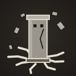
WThe ShoveNeeds Gerald within 3 m. He slides 8 m along your aim at 8 m/s: 70 damage to the first enemy he touches, who is carried along. Stopped by a wall with them: stunned 0.9 s.
EA Good LeanNeeds Gerald within 8 m. Dash to him and stop 1.5 m short, with a shield of 60 for 2 s. He did not ask for the hug.
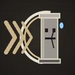
RGerald, No!Needs Gerald. He topples along your aim: a 10 m shadow for 1.0 s, then 150 damage to anyone in it. He breaks into rubble that slows for 3 s, and you have no pillar left.
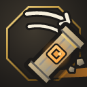
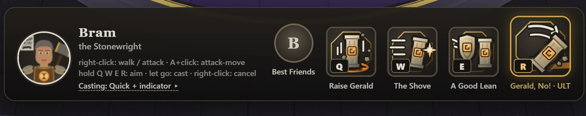
The spell bar, desktop (1280 wide)
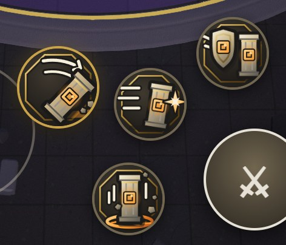
Phone (375 wide)
Bo the Ramherd
Proposed row Fold / bell (src/kits/sheep.ts): fleece to the bell's gold, a meadow green accent; the ground a dusk meadow.
corehotbodyaccentdark
SpellTodayNew
QCrook WhackHe shakes his crook, then whacks a 4 m cone: 58 damage, and a sheep at the feet of whoever he hits. Stay out of 4 m.
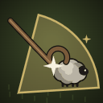
WSpare SheepThree sheep land at a spot (8 m) for 6 s: 30 HP each. They walk to whoever is nearest, him or you, and each touch adds Wool. Six units a side at most.
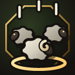
EShearNeeds a sheep within 6 m: he shears it, it runs on naked and fast, and he throws the wool (8 m): 50 damage and 3 Wool.
RStampedeEight sheep run down a 12 m line, 4 m wide, after 0.8 s: 30 each, three hits at most, and each hit adds Wool. Step out of the line.
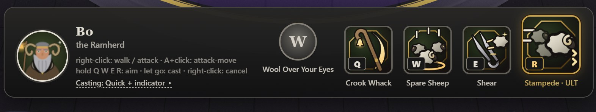
The spell bar, desktop (1280 wide)
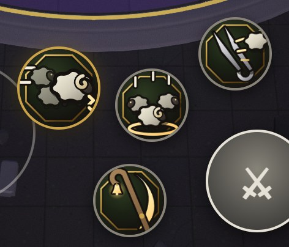
Phone (375 wide)
Big Yoko the Mountain
Proposed row Ring / shrine (src/kits/sumo.ts): rice paper, peach, his crimson, straw-rope gold.
corehotbodyaccentdark
SpellTodayNew
QPalm StrikeAn open palm slaps the way he faces (2.8 m, 0.4 s): 54 damage, and you are shoved 3 m. A shove that takes you out of his ring is a ring-out.
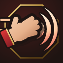
WStompHe stomps a new ring at his feet (0.5 s): 50 damage and slowed 1 s within 3 m. The ring is 5 m in radius and stands 8 s: a push that takes you out of it is a ring-out.
EChargeHe runs 6 m down the aim (0.4 s wind-up, strip shown): the first enemy on it takes 40 and is carried along ahead of him. If that carries you out of his ring, it is a ring-out.
RSalt ThrowHe throws a fistful of salt: a 6 m cone after 0.6 s blinds you for 1.5 s. His ring gets 2 m smaller for the rest of its life, and he is 30% faster for 4 s.
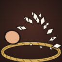
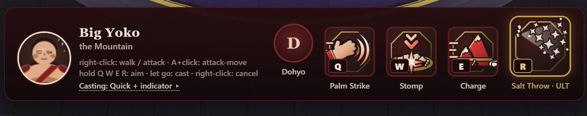
The spell bar, desktop (1280 wide)
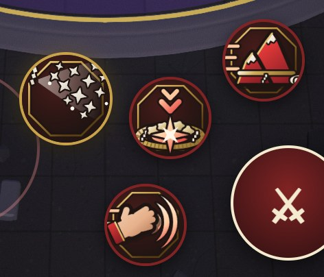
Phone (375 wide)
Referee Whistler the Arbiter
Proposed row Arbiter (src/kits/referee.ts): ivory, horn silver, the yellow sigil; red for the rule's bar.
corehotbodyaccentdark
SpellTodayNew
QWhistle BlastA ring of sound (8 m, 0.3 s wind-up): 78 damage. Sidestep it.
WNo RunningA rule for the enemy in sight within 7 m: no dashes, blinks or leaps for 3 s. Break it and you get a yellow card.
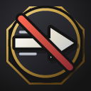
ENo CastingA rule for the enemy in sight within 7 m: no spells, only basic attacks, for 2 s. Cast anyway and the spell goes off, with a yellow card.
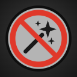
RShow the CardHe points at a spot (9 m, 0.6 s): a yellow card to whoever he still sees there, and HANDS OFF for 3 s: hit him and you get another. Two yellows are a red: 90 damage and silenced 1.5 s.
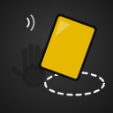
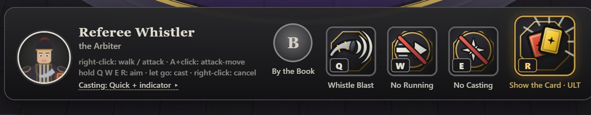
The spell bar, desktop (1280 wide)
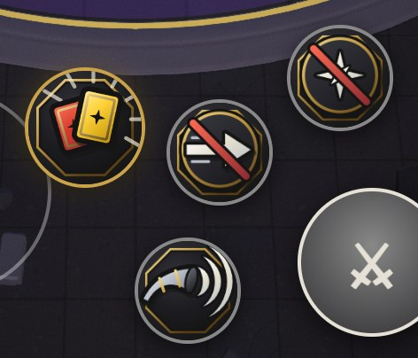
Phone (375 wide)
Oblivion the Unmaker
The art bible's Void row.
corehotbodyaccentdark
SpellTodayNew
QGravity SlamHe slams the ground: 60 within 3 m, and enemies there are dragged 1.5 m toward him.
WNull ZoneA 3 m sphere of void stays where he cast it for 3 s. Enemies inside cannot cast, and bolts that enter it vanish.
EPhase StepHe marks a spot within 4 m, then steps through the void to it 0.25 s later. His next basic attack within 3 s rips for +40 and weakens the enemy 20% for 2 s.
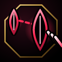
RBlack HoleA black hole crawls 8 m down his aim for 4 s, pulling enemies within 5 m. Touching its core deals 105 and stuns 1 s, once. Recast: it collapses at once for 85 within 3 m, after a 0.5 s warning.
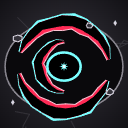
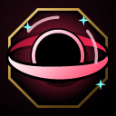
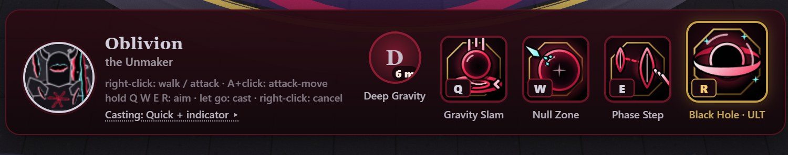
The spell bar, desktop (1280 wide)
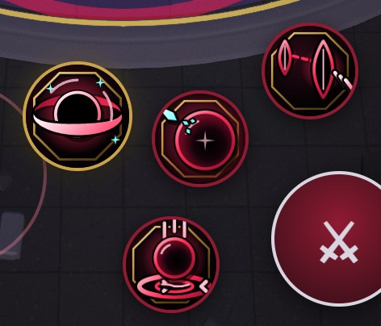
Phone (375 wide)
Mortis the Ossuary Lord
The art bible's Bone row.
corehotbodyaccentdark
SpellTodayNew
QBone FanFlicks three thin bone shards in a fan, 18 degrees apart (31 each, 8 m). Every bone pile within 3 m of him throws one more (six at most), and the fan widens. Stand between two shards past 5 m.
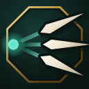
WRaise DeadA skeleton claws out of the ground at the spot, and one more for every bone pile within 4 m of it (three more at most).
EBone ArmourA cage of ribs closes round him: a shield of 30, plus 30 per living skeleton (120 at most), for 4 s. When it breaks, or at 3.5 s, its shards fly at the enemy for 38. Recast (from 0.3 s, within 4 s): Shatter it now and the shards fly at once.
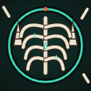
RGrave GraspUltimate. Click the enemy (needs line of sight): a hand rises where it stood, a 1.6 m ring shown for 0.7 s. If it is still inside, the hand drags it 4 m toward him (55 damage), roots it for 1 s, and two skeletons claw out beside it (28 damage more). If it stepped out, the hand closes on nothing.
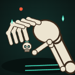
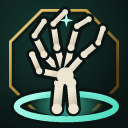
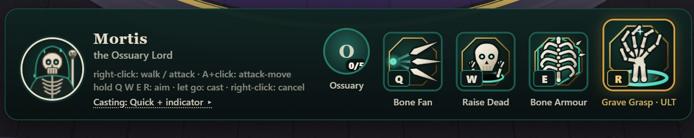
The spell bar, desktop (1280 wide)
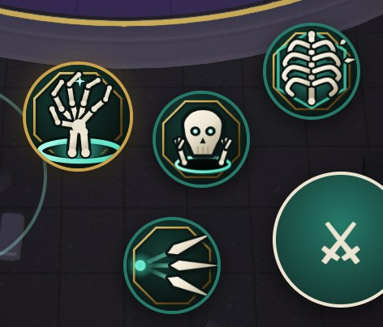
Phone (375 wide)
Gus the Temple Keeper
Proposed row Temple water (src/kits/janitor.ts): foam, water, the ward's yellow, the deep.
corehotbodyaccentdark
SpellTodayNew
QBig MopA mop swipe in front of him (3.5 m, 0.3 s): 60 damage, and a strip of wet floor 6 m long. It wipes your rods, flowers and ink along the strip.
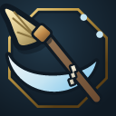
WWet Floor SignA folding sign at a spot (8 m) for 6 s, a real obstacle with 40 health. A hero who slides into it takes 40 and is stunned 0.6 s. Two charges, one back every 8 s.
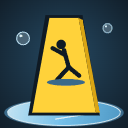
EMop BucketHe throws the wheeled bucket (8 m, 0.3 s wind-up): 55 damage, and the floor 2.5 m round where it stops is wet.
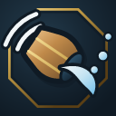
RFloodAfter a 1 s warning the whole floor within 7 m of him is wet for 5 s. He surfs on it: +35% speed. Stand near cover, which stops a slide, or walk straight lines.
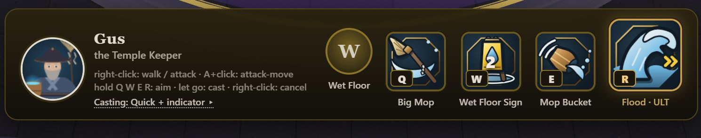
The spell bar, desktop (1280 wide)
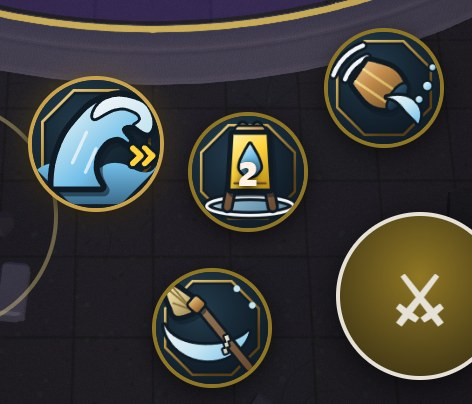
Phone (375 wide)
Professor Puff the Aeronaut
Proposed row Aether (src/kits/balloon.ts): rose gas, a sky-blue accent, aubergine, brass.
corehotbodyaccentdark
SpellTodayNew
QAir HoseA jet of air (8 m, 22 m/s, 0.3 s wind-up): 60 damage, 3 Air and a 1 m push. Each Air pushes it 8% farther.
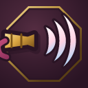
WHelium BombA balloon floats to a spot (9 m) and pops after 1.0 s: 50 damage and 3 Air to everyone within 2.5 m.
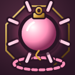
EHot AirHe inflates and floats 6 m away from the spot you aim at. Anyone within 2.5 m of where he left is pushed 3 m.
RPop!A pin flies at you (9 m, 0.6 s, it needs sight when it lands): 60 damage plus 20 per Air, and all your Air goes out in a 3 m shove.
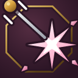
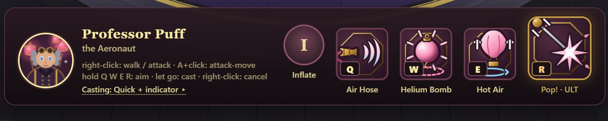
The spell bar, desktop (1280 wide)
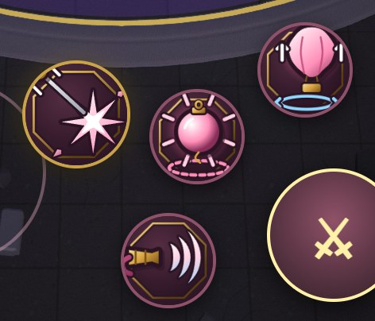
Phone (375 wide)
File sizes
The SVGs the game loads (public/icons/spells/), only when a hero's slots are first drawn.
Icon
SVG
gzipped
bram-e
8.0 KB
1.7 KB
bram-q
8.5 KB
1.6 KB
bram-r
7.2 KB
1.6 KB
bram-w
6.3 KB
1.4 KB
bo-e
7.3 KB
1.7 KB
bo-q
7.1 KB
1.8 KB
bo-r
15.5 KB
3.6 KB
bo-w
15.6 KB
3.6 KB
big-yoko-e
8.9 KB
1.7 KB
big-yoko-q
15.1 KB
3.6 KB
big-yoko-r
9.8 KB
2.0 KB
big-yoko-w
10.7 KB
2.2 KB
referee-whistler-e
4.0 KB
1.0 KB
referee-whistler-q
14.6 KB
3.5 KB
referee-whistler-r
6.7 KB
1.8 KB
referee-whistler-w
3.9 KB
0.9 KB
oblivion-e
6.5 KB
1.2 KB
oblivion-q
5.6 KB
1.1 KB
oblivion-r
8.7 KB
2.2 KB
oblivion-w
4.5 KB
1.1 KB
mortis-e
9.5 KB
1.6 KB
mortis-q
5.0 KB
1.1 KB
mortis-r
13.0 KB
1.8 KB
mortis-w
9.6 KB
1.7 KB
gus-e
9.5 KB
2.2 KB
gus-q
8.0 KB
2.0 KB
gus-r
6.0 KB
1.6 KB
gus-w
5.2 KB
1.2 KB
professor-puff-e
6.9 KB
1.5 KB
professor-puff-q
11.4 KB
2.5 KB
professor-puff-r
5.5 KB
1.2 KB
professor-puff-w
6.9 KB
1.3 KB
All 32
271.2 KB
59.1 KB
Files: the drawings pipeline/icons/vectorcraft/draw/<hero>.py, the shared rules vclib.py, the runner make.py, this page page.py (batches.json holds the notes).